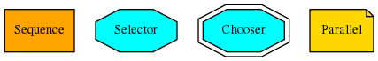

Module API¶
py_trees¶
This is the top-level namespace of the py_trees package.
py_trees.behaviour¶
The core behaviour template. All behaviours, standalone and composite, inherit from this class.
-
class
py_trees.behaviour.Behaviour(name='', *args, **kwargs)[source]¶ Bases:
objectDefines the basic properties and methods required of a node in a behaviour tree.
Uses all the whizbang tricks from coroutines and generators to do this as optimally as you may in python. When implementing your own behaviour, subclass this class.
Parameters: - name (
str) – the behaviour name - *args – variable length argument list.
- **kwargs – arbitrary keyword arguments.
Variables: - name (
str) – the behaviour name - status (
Status) – the behaviour status (INVALID,RUNNING,FAILURE,SUCCESS) - parent (
Behaviour) – aCompositeinstance if nested in a tree, otherwise None - children ([
Behaviour]) – empty for regular behaviours, populated for composites - feedback_message (
str) – a simple message used to notify of significant happenings - blackbox_level (
BlackBoxLevel) – a helper variable for dot graphs and runtime gui’s to collapse/explode entire subtrees dependent upon the blackbox level.
-
has_parent_with_instance_type(instance_type)[source]¶ Moves up through this behaviour’s parents looking for a behaviour with the same instance type as that specified.
Parameters: instance_type ( str) – instance type of the parent to matchReturns: whether a parent was found or not Return type: bool
-
has_parent_with_name(name)[source]¶ Searches through this behaviour’s parents, and their parents, looking for a behaviour with the same name as that specified.
Parameters: name ( str) – name of the parent to match, can be a regular expressionReturns: whether a parent was found or not Return type: bool
-
initialise()[source]¶ Note
User Customisable Callback
Subclasses may override this method to perform any necessary initialising/clearing/resetting of variables when when preparing to enter this behaviour if it was not previously
RUNNING. i.e. Expect this to trigger more than once!
-
iterate(direct_descendants=False)[source]¶ Generator that provides iteration over this behaviour and all its children. To traverse the entire tree:
for node in my_behaviour.iterate(): print("Name: {0}".format(node.name))
Parameters: direct_descendants ( bool) – only yield children one step away from this behaviour.Yields: Behaviour– one of it’s children
-
setup(timeout)[source]¶ Subclasses may override this method to do any one-time delayed construction that is necessary for runtime. This is best done here rather than in the constructor so that trees can be instantiated on the fly without any severe runtime requirements (e.g. a hardware sensor) on any pc to produce visualisations such as dot graphs.
Note
User Customisable Callback
Parameters: timeout ( float) – time to wait (0.0 is blocking forever)Returns: whether it timed out trying to setup Return type: bool
-
stop(new_status=<Status.INVALID: 'INVALID'>)[source]¶ Parameters: new_status ( Status) – the behaviour is transitioning to this new statusThis calls the user defined
terminate()method and also resets the generator. It will finally set the new status once the user’sterminate()function has been called.Warning
Do not use this method, override
terminate()instead.
-
terminate(new_status)[source]¶ Note
User Customisable Callback
Subclasses may override this method to clean up. It will be triggered when a behaviour either finishes execution (switching from
RUNNINGtoFAILURE||SUCCESS) or it got interrupted by a higher priority branch (switching toINVALID). Remember that theinitialise()method will handle resetting of variables before re-entry, so this method is about disabling resources until this behaviour’s next tick. This could be a indeterminably long time. e.g.- cancel an external action that got started
- shut down any tempoarary communication handles
Parameters: new_status ( Status) – the behaviour is transitioning to this new statusWarning
Do not set self.status = new_status here, that is automatically handled by the
stop()method. Use the argument purely for introspection purposes (e.g. comparing the current state in self.status with the state it will transition to in new_status.
-
tick()[source]¶ This function is a generator that can be used by an iterator on an entire behaviour tree. It handles the logic for deciding when to call the user’s
initialise()andterminate()methods as well as making the actual call to the user’supdate()method that determines the behaviour’s new status once the tick has finished. Once done, it will then yield itself (generator mechanism) so that it can be used as part of an iterator for the entire tree.for node in my_behaviour.tick(): print("Do something")
Note
This is a generator function, you must use this with yield. If you need a direct call, prefer
tick_once()instead.Yields: Behaviour– a reference to itself
-
tick_once()[source]¶ A direct means of calling tick on this object without using the generator mechanism.
-
tip()[source]¶ Get the tip of this behaviour’s subtree (if it has one) after it’s last tick. This corresponds to the the deepest node that was running before the subtree traversal reversed direction and headed back to this node.
Returns: child behaviour, itself or Noneif its status isINVALIDReturn type: BehaviourorNone
-
update()[source]¶ Note
User Customisable Callback
Returns: the behaviour’s new status StatusReturn type: StatusSubclasses may override this method to perform any logic required to arrive at a decision on the behaviour’s new status. It is the primary worker function called on by the
tick()mechanism.Tip
This method should be almost instantaneous and non-blocking
- name (
py_trees.behaviours¶
A library of fundamental behaviours for use.
-
class
py_trees.behaviours.Count(name='Count', fail_until=3, running_until=5, success_until=6, reset=True, *args, **kwargs)[source]¶ Bases:
py_trees.behaviour.BehaviourA counting behaviour that updates its status at each tick depending on the value of the counter. The status will move through the states in order -
FAILURE,RUNNING,SUCCESS.This behaviour is useful for simple testing and demo scenarios.
Parameters: - name (
str) – name of the behaviour - fail_until (
int) – set status toFAILUREuntil the counter reaches this value - running_until (
int) – set status toRUNNINGuntil the counter reaches this value - success_until (
int) – set status toSUCCESSuntil the counter reaches this value - reset (
bool) – whenever invalidated (usually by a sequence reinitialising, or higher priority interrupting)
Variables: count (
int) – a simple counter which increments every tick- name (
-
class
py_trees.behaviours.Failure(name='', *args, **kwargs)¶ Bases:
py_trees.behaviour.BehaviourDo nothing but tick over with
FAILURE.
-
class
py_trees.behaviours.OneshotSequence(name='Sequence', children=None, *args, **kwargs)[source]¶ Bases:
py_trees.composites.SequenceA sequence with a oneshot decorator applied to it.
-
class
py_trees.behaviours.Periodic(name, n)[source]¶ Bases:
py_trees.behaviour.BehaviourSimply periodically rotates it’s status over the
RUNNING,SUCCESS,FAILUREstates. That is,RUNNINGfor N ticks,SUCCESSfor N ticks,FAILUREfor N ticks...Parameters: - name (
str) – name of the behaviour - n (
int) – period value (in ticks)
Note
It does not reset the count when initialising.
- name (
-
class
py_trees.behaviours.Running(name='', *args, **kwargs)¶ Bases:
py_trees.behaviour.BehaviourDo nothing but tick over with
RUNNING.
-
class
py_trees.behaviours.Success(name='', *args, **kwargs)¶ Bases:
py_trees.behaviour.BehaviourDo nothing but tick over with
SUCCESS.
-
class
py_trees.behaviours.SuccessEveryN(name, n)[source]¶ Bases:
py_trees.behaviour.BehaviourThis behaviour updates it’s status with
SUCCESSonce every N ticks,FAILUREotherwise.Parameters: - name (
str) – name of the behaviour - n (
int) – trigger success on every n’th tick
Tip
Use with decorators to change the status value as desired, e.g.
py_trees.meta.failure_is_running()- name (
py_trees.blackboard¶
Blackboards are not a necessary component, but are a fairly standard feature in most behaviour tree implementations. See, for example, the design notes for blackboards in Unreal Engine.

Implementations however, tend to vary quite a bit depending on the needs of the framework using them. Some of the usual considerations include scope and sharing of blackboards across multiple tree instances.
For this package, we’ve decided to keep blackboards extremely simple to fit with the same ‘rapid development for small scale systems’ principles that this library is designed for.
- No sharing between tree instances
- No locking for reading/writing
- Global scope, i.e. any behaviour can access any variable
- No external communications (e.g. to a database)
-
class
py_trees.blackboard.Blackboard[source]¶ Bases:
objectBorg style key-value store for sharing amongst behaviours.
Examples
You can instantiate the blackboard from anywhere in your program. Even disconnected calls will get access to the same data store. For example:
def check_foo(): blackboard = Blackboard() assert(blackboard.foo, "bar") if __name__ == '__main__': blackboard = Blackboard() blackboard.foo = "bar" check_foo()
If the key value you are interested in is only known at runtime, then you can set/get from the blackboard without the convenient variable style access:
blackboard = Blackboard() result = blackboard.set("foo", "bar") foo = blackboard.get("foo")
The blackboard can also be converted and printed (with highlighting) as a string. This is useful for logging and debugging.
print(Blackboard())
Warning
Be careful of key collisions. This implementation leaves this management up to the user.
See also
The py-trees-demo-blackboard program demos use of the blackboard along with a couple of the blackboard behaviours.
-
__str__()[source]¶ Express the blackboard contents as a string. Useful for debugging.
Returns: blackboard contents Return type: str
-
get(name)[source]¶ For when you only have strings to identify and access the blackboard variables, this provides a convenient accessor.
Parameters: name ( str) – name of the variable to set
-
set(name, value, overwrite=True)[source]¶ For when you only have strings to identify and access the blackboard variables, this provides a convenient setter.
Parameters: - name (
str) – name of the variable to set - value (
any) – any variable type - overwrite (
bool) – whether to abort if the value is already present
Returns: always True unless overwrite was set to False and a variable already exists
Return type: bool- name (
-
-
class
py_trees.blackboard.CheckBlackboardVariable(name, variable_name='dummy', expected_value=None, comparison_operator=<built-in function eq>, clearing_policy=<ClearingPolicy.ON_INITIALISE: 1>)[source]¶ Bases:
py_trees.behaviour.BehaviourCheck the blackboard to see if it has a specific variable and optionally whether that variable has an expected value. It is a binary behaviour, always updating it’s status with either
SUCCESSorFAILUREat each tick.Parameters: - name (
str) – name of the behaviour - variable_name (
str) – name of the variable to set - expected_value (
any) – expected value to find (if None, check for existence only) - comparison_operator (
func) – one from the python operator module - clearing_policy (
any) – when to clear the match result, seeClearingPolicy
Tip
If just checking for existence, use the default argument expected_value=None.
Tip
There are times when you want to get the expected match once and then save that result thereafter. For example, to flag once a system has reached a subgoal. Use the
NEVERflag to do this.-
initialise()[source]¶ Clears the internally stored message ready for a new run if
old_data_is_validwasn’t set.
- name (
-
class
py_trees.blackboard.ClearBlackboardVariable(name='Clear Blackboard Variable', variable_name='dummy')[source]¶ Bases:
py_trees.meta.SuccessClear the specified value from the blackboard.
Parameters: - name (
str) – name of the behaviour - variable_name (
str) – name of the variable to clear
- name (
-
class
py_trees.blackboard.SetBlackboardVariable(name='Set Blackboard Variable', variable_name='dummy', variable_value=None)[source]¶ Bases:
py_trees.meta.SuccessSet the specified variable on the blackboard. Usually we set variables from inside other behaviours, but can be convenient to set them from a behaviour of their own sometimes so you don’t get blackboard logic mixed up with more atomic behaviours.
Parameters: - name (
str) – name of the behaviour - variable_name (
str) – name of the variable to set - variable_value (
any) – value of the variable to set
Todo
overwrite option, leading to possible failure/success logic.
- name (
-
class
py_trees.blackboard.WaitForBlackboardVariable(name, variable_name='dummy', expected_value=None, comparison_operator=<built-in function eq>, clearing_policy=<ClearingPolicy.ON_INITIALISE: 1>)[source]¶ Bases:
py_trees.behaviour.BehaviourCheck the blackboard to see if it has a specific variable and optionally whether that variable has a specific value. Unlike
CheckBlackboardVariablethis class will be in aSUCCESSstate until the variable appears and (optionally) is matched.Parameters: - name (
str) – name of the behaviour - variable_name (
str) – name of the variable to set - expected_value (
any) – expected value to find (if None, check for existence only) - comparison_operator (
func) – one from the python operator module - clearing_policy (
any) – when to clear the match result, seeClearingPolicy
See also
-
initialise()[source]¶ Clears the internally stored message ready for a new run if
old_data_is_validwasn’t set.
- name (
py_trees.common¶
Common definitions, methods and variables used by the py_trees library.
-
class
py_trees.common.BlackBoxLevel[source]¶ Bases:
enum.IntEnumWhether a behaviour is a blackbox entity that may be considered collapsible (i.e. everything in its subtree will not be visualised) by visualisation tools.
Blackbox levels are increasingly persistent in visualisations.
Visualisations by default, should always collapse blackboxes that represent DETAIL.
-
BIG_PICTURE= <BlackBoxLevel.BIG_PICTURE: 3>¶ A blackbox that represents a big picture part of the entire tree view.
-
COMPONENT= <BlackBoxLevel.COMPONENT: 2>¶ A blackbox that encapsulates a subgroup of functionalities as a single group.
-
DETAIL= <BlackBoxLevel.DETAIL: 1>¶ A blackbox that encapsulates detailed activity.
-
NOT_A_BLACKBOX= <BlackBoxLevel.NOT_A_BLACKBOX: 4>¶ Not a blackbox, do not ever collapse.
-
-
class
py_trees.common.ClearingPolicy[source]¶ Bases:
enum.IntEnumPolicy rules for behaviours to dictate when data should be cleared/reset. Used by the
subscribersmodule.-
NEVER= <ClearingPolicy.NEVER: 3>¶ Never clear the data
-
ON_INITIALISE= <ClearingPolicy.ON_INITIALISE: 1>¶ Clear when entering the
initialise()method.
-
-
class
py_trees.common.ParallelPolicy[source]¶ Bases:
enum.EnumPolicy rules for
Parallelcomposites.-
SUCCESS_ON_ALL= <ParallelPolicy.SUCCESS_ON_ALL: 'SUCCESS_ON_ALL'>¶
-
-
class
py_trees.common.Status[source]¶ Bases:
enum.EnumAn enumerator representing the status of a behaviour
-
FAILURE= <Status.FAILURE: 'FAILURE'>¶ Behaviour check has failed, or execution of its action finished with a failed result.
-
INVALID= <Status.INVALID: 'INVALID'>¶ Behaviour is uninitialised and inactive, i.e. this is the status before first entry, and after a higher priority switch has occurred.
-
RUNNING= <Status.RUNNING: 'RUNNING'>¶ Behaviour is in the middle of executing some action, result still pending.
-
SUCCESS= <Status.SUCCESS: 'SUCCESS'>¶ Behaviour check has passed, or execution of its action has finished with a successful result.
-
-
class
py_trees.common.VisibilityLevel[source]¶ Bases:
enum.IntEnumClosely associated with the
BlackBoxLevelfor a behaviour. This sets the visibility level to be used for visualisations.Visibility levels correspond to reducing levels of visibility in a visualisation.
-
ALL= <VisibilityLevel.ALL: 0>¶ Do not collapse any behaviour.
-
BIG_PICTURE= <VisibilityLevel.BIG_PICTURE: 3>¶ Collapse any blackbox that isn’t marked with
BIG_PICTURE.
-
-
common.string_to_visibility_level(level)¶ Will convert a string to a visibility level. Note that it will quietly return ALL if the string is not matched to any visibility level string identifier.
Parameters: level (str) – visibility level as a string Returns: visibility level enum Return type: VisibilityLevel
py_trees.composites¶
Composites are the factories and decision makers of a behaviour tree. They are responsible for shaping the branches.

Tip
You should never need to subclass or create new composites.
Most patterns can be achieved with a combination of the above. Adding to this set exponentially increases the complexity and subsequently making it more difficult to design, introspect, visualise and debug the trees. Always try to find the combination you need to achieve your result before contemplating adding to this set. Actually, scratch that...just don’t contemplate it!
Composite behaviours typically manage children and apply some logic to the way they execute and return a result, but generally don’t do anything themselves. Perform the checks or actions you need to do in the non-composite behaviours.
Sequence: execute children sequentiallySelector: select a path through the tree, interruptible by higher prioritiesChooser: like a selector, but commits to a path once started until it finishesParallel: manage children concurrently
-
class
py_trees.composites.Chooser(name='Chooser', children=None, *args, **kwargs)[source]¶ Bases:
py_trees.composites.SelectorChoosers are Selectors with Commitment
![digraph chooser {
graph [fontname="times-roman"];
node [fontname="times-roman"];
edge [fontname="times-roman"];
Chooser [fontcolor=black, shape=doubleoctagon, fontsize=11, style=filled, fillcolor=cyan];
"High Priority" [fontcolor=black, shape=ellipse, fontsize=11, style=filled, fillcolor=gray];
Chooser -> "High Priority";
"Med Priority" [fontcolor=black, shape=ellipse, fontsize=11, style=filled, fillcolor=gray];
Chooser -> "Med Priority";
"Low Priority" [fontcolor=black, shape=ellipse, fontsize=11, style=filled, fillcolor=gray];
Chooser -> "Low Priority";
}](_images/graphviz-5f55457f594243754acfb9159aac28a8ab3bead0.png)
A variant of the selector class. Once a child is selected, it cannot be interrupted by higher priority siblings. As soon as the chosen child itself has finished it frees the chooser for an alternative selection. i.e. priorities only come into effect if the chooser wasn’t running in the previous tick.
Note
This is the only composite in py_trees that is not a core composite in most behaviour tree implementations. Nonetheless, this is useful in fields like robotics, where you have to ensure that your manipulator doesn’t drop it’s payload mid-motion as soon as a higher interrupt arrives. Use this composite sparingly and only if you can’t find another way to easily create an elegant tree composition for your task.
Parameters: - name (
str) – the composite behaviour name - children ([
Behaviour]) – list of children to add - *args – variable length argument list
- **kwargs – arbitrary keyword arguments
- name (
-
class
py_trees.composites.Composite(name='', children=None, *args, **kwargs)[source]¶ Bases:
py_trees.behaviour.BehaviourThe parent class to all composite behaviours, i.e. those that have children.
Parameters: - name (
str) – the composite behaviour name - children ([
Behaviour]) – list of children to add - *args – variable length argument list
- **kwargs – arbitrary keyword arguments
-
add_child(child)[source]¶ Adds a child.
Parameters: child ( Behaviour) – child to deleteReturns: unique id of the child Return type: uuid.UUID
-
add_children(children)[source]¶ Append a list of children to the current list.
Parameters: children ([ Behaviour]) – list of children to add
-
insert_child(child, index)[source]¶ Insert child at the specified index. This simply directly calls the python list’s
insertmethod using the child and index arguments.Parameters: - child (
Behaviour) – child to insert - index (
int) – index to insert it at
Returns: unique id of the child
Return type: uuid.UUID
- child (
-
prepend_child(child)[source]¶ Prepend the child before all other children.
Parameters: child ( Behaviour) – child to insertReturns: unique id of the child Return type: uuid.UUID
-
remove_child(child)[source]¶ Remove the child behaviour from this composite.
Parameters: child ( Behaviour) – child to deleteReturns: index of the child that was removed Return type: intTodo
Error handling for when child is not in this list
-
remove_child_by_id(child_id)[source]¶ Remove the child with the specified id.
Parameters: child_id (uuid.UUID) – unique id of the child Raises: IndexError– if the child was not found
-
setup(timeout)[source]¶ Relays to each child’s
setup()method in turn.Parameters: timeout ( float) – time to wait (0.0 is blocking forever)Returns: suceess or failure of the operation Return type: bool
-
stop(new_status=<Status.INVALID: 'INVALID'>)[source]¶ There is generally two use cases that must be supported here.
1) Whenever the composite has gone to a recognised state (i.e.
FAILUREor SUCCESS), or 2) when a higher level parent calls on it to truly stop (INVALID).In only the latter case will children need to be forcibly stopped as well. In the first case, they will have stopped themselves appropriately already.
Parameters: new_status ( Status) – behaviour will transition to this new status
- name (
-
class
py_trees.composites.Parallel(name='Parallel', policy=<ParallelPolicy.SUCCESS_ON_ALL: 'SUCCESS_ON_ALL'>, children=None, *args, **kwargs)[source]¶ Bases:
py_trees.composites.CompositeParallels enable a kind of concurrency
![digraph parallel {
graph [fontname="times-roman"];
node [fontname="times-roman"];
edge [fontname="times-roman"];
"Parallel" [fontcolor=black, shape=note, fontsize=11, style=filled, fillcolor=gold];
"B1" [fontcolor=black, shape=ellipse, fontsize=11, style=filled, fillcolor=gray];
"Parallel" -> "B1";
"B2" [fontcolor=black, shape=ellipse, fontsize=11, style=filled, fillcolor=gray];
"Parallel" -> "B2";
}](_images/graphviz-e5fff1a48a5e77f6cecdbe4bf76b1bdf08807f0f.png)
Ticks every child every time the parallel is run (a poor man’s form of paralellism).
- Parallels will return
FAILUREif any child returnsFAILURE - Parallels with policy
SUCCESS_ON_ONEreturnSUCCESSif at least one child returnsSUCCESSand others areRUNNING. - Parallels with policy
SUCCESS_ON_ALLonly returnsSUCCESSif all children returnSUCCESS
See also
The py-trees-demo-context-switching program demos a parallel used to assist in a context switching scenario.
Parameters: - name (
str) – the composite behaviour name - policy (
ParallelPolicy) – policy to use for deciding success or otherwise - children ([
Behaviour]) – list of children to add - *args – variable length argument list
- **kwargs – arbitrary keyword arguments
- Parallels will return
-
class
py_trees.composites.Selector(name='Selector', children=None, *args, **kwargs)[source]¶ Bases:
py_trees.composites.CompositeSelectors are the Decision Makers
![digraph selector {
graph [fontname="times-roman"];
node [fontname="times-roman"];
edge [fontname="times-roman"];
Selector [fontcolor=black, shape=octagon, fontsize=11, style=filled, fillcolor=cyan];
"High Priority" [fontcolor=black, shape=ellipse, fontsize=11, style=filled, fillcolor=gray];
Selector -> "High Priority";
"Med Priority" [fontcolor=black, shape=ellipse, fontsize=11, style=filled, fillcolor=gray];
Selector -> "Med Priority";
"Low Priority" [fontcolor=black, shape=ellipse, fontsize=11, style=filled, fillcolor=gray];
Selector -> "Low Priority";
}](_images/graphviz-1003da976a92af7388ec785e3f2add3605d285dd.png)
A selector executes each of its child behaviours in turn until one of them succeeds (at which point it itself returns
RUNNINGorSUCCESS, or it runs out of children at which point it itself returnsFAILURE. We usually refer to selecting children as a means of choosing between priorities. Each child and its subtree represent a decreasingly lower priority path.Note
Switching from a low -> high priority branch causes a stop(INVALID) signal to be sent to the previously executing low priority branch. This signal will percolate down that child’s own subtree. Behaviours should make sure that they catch this and destruct appropriately.
Make sure you do your appropriate cleanup in the
terminate()methods! e.g. cancelling a running goal, or restoring a context.See also
The py-trees-demo-selector program demos higher priority switching under a selector.
Parameters: - name (
str) – the composite behaviour name - children ([
Behaviour]) – list of children to add - *args – variable length argument list
- **kwargs – arbitrary keyword arguments
-
__repr__()[source]¶ Simple string representation of the object.
Returns: string representation Return type: str
-
stop(new_status=<Status.INVALID: 'INVALID'>)[source]¶ Stopping a selector requires setting the current child to none. Note that it is important to implement this here instead of terminate, so users are free to subclass this easily with their own terminate and not have to remember that they need to call this function manually.
Parameters: new_status ( Status) – the composite is transitioning to this new status
- name (
-
class
py_trees.composites.Sequence(name='Sequence', children=None, *args, **kwargs)[source]¶ Bases:
py_trees.composites.CompositeSequences are the factory lines of Behaviour Trees
![digraph sequence {
graph [fontname="times-roman"];
node [fontname="times-roman"];
edge [fontname="times-roman"];
Sequence [fillcolor=orange, fontcolor=black, fontsize=11, shape=box, style=filled];
Guard [fillcolor=gray, fontcolor=black, fontsize=11, shape=ellipse, style=filled];
Sequence -> Guard;
"Action 1" [fillcolor=gray, fontcolor=black, fontsize=11, shape=ellipse, style=filled];
Sequence -> "Action 1";
"Action 2" [fillcolor=gray, fontcolor=black, fontsize=11, shape=ellipse, style=filled];
Sequence -> "Action 2";
"Action 3" [fillcolor=gray, fontcolor=black, fontsize=11, shape=ellipse, style=filled];
Sequence -> "Action 3";
}](_images/graphviz-de57a33516ce00a65697f27fd7ec9a3fe2d93e1e.png)
A sequence will progressively tick over each of its children so long as each child returns
SUCCESS. If any child returnsFAILUREorRUNNINGthe sequence will halt and the parent will adopt the result of this child. If it reaches the last child, it returns with that result regardless.Note
The sequence halts once it sees a child is RUNNING and then returns the result. It does not get stuck in the running behaviour.
See also
The py-trees-demo-sequence program demos a simple sequence in action.
Parameters: - name (
str) – the composite behaviour name - children ([
Behaviour]) – list of children to add - *args – variable length argument list
- **kwargs – arbitrary keyword arguments
-
current_child¶ Have to check if there’s anything actually running first.
Returns: the child that is currently running, or None Return type: Behaviour
-
stop(new_status=<Status.INVALID: 'INVALID'>)[source]¶ Stopping a sequence requires taking care of the current index. Note that is important to implement this here intead of terminate, so users are free to subclass this easily with their own terminate and not have to remember that they need to call this function manually.
Parameters: new_status ( Status) – the composite is transitioning to this new status
- name (
py_trees.console¶
Simple colour definitions and syntax highlighting for the console.
Colour Definitions
The current list of colour definitions include:
Regular: black, red, green, yellow, blue, magenta, cyan, white,Bold: bold, bold_black, bold_red, bold_green, bold_yellow, bold_blue, bold_magenta, bold_cyan, bold_white
These colour definitions can be used in the following way:
import py_trees.console as console
print(console.cyan + " Name" + console.reset + ": " + console.yellow + "Dude" + console.reset)
-
py_trees.console.colours= ['', '', '', '', '', '', '', '', '', '', '', '', '', '', '', '', '']¶ List of all available colours.
-
py_trees.console.console_has_colours()[source]¶ Detects if the console (stdout) has colourising capability.
-
py_trees.console.has_colours= False¶ Whether the loading program has access to colours or not.
-
py_trees.console.logdebug(message)[source]¶ Prefixes
[DEBUG]and colours the message green.Parameters: message ( str) – message to log.
-
py_trees.console.logerror(message)[source]¶ Prefixes
[ERROR]and colours the message red.Parameters: message ( str) – message to log.
-
py_trees.console.logfatal(message)[source]¶ Prefixes
[FATAL]and colours the message bold red.Parameters: message ( str) – message to log.
-
py_trees.console.loginfo(message)[source]¶ Prefixes
[ INFO]to the message.Parameters: message ( str) – message to log.
-
py_trees.console.logwarn(message)[source]¶ Prefixes
[ WARN]and colours the message yellow.Parameters: message ( str) – message to log.
-
py_trees.console.read_single_keypress()[source]¶ Waits for a single keypress on stdin.
This is a silly function to call if you need to do it a lot because it has to store stdin’s current setup, setup stdin for reading single keystrokes then read the single keystroke then revert stdin back after reading the keystroke.
Returns: the character of the key that was pressed Return type: intRaises: KeyboardInterrupt– if CTRL-C was pressed (keycode 0x03)
py_trees.display¶
Behaviour trees are significantly easier to design, monitor and debug with visualisations. Py Trees does provide minimal assistance to render trees to various simple output formats. Currently this includes dot graphs, strings or stdout.
-
py_trees.display.ascii_tree(tree, indent=0, snapshot_information=None)[source]¶ Build an ascii tree representation as a string for redirecting to elsewhere other than stdout. This can be the entire tree, or a recorded snapshot of the tree (i.e. just the part that was traversed).
Parameters: - tree (
Behaviour) – the root of the tree, or subtree you want to show - indent (
int) – the number of characters to indent the tree - snapshot_information (
visitors) – a visitor that recorded information about a traversed tree (e.g.SnapshotVisitor) - snapshot_information – a visitor that recorded information about a traversed tree (e.g.
SnapshotVisitor)
Returns: an ascii tree (i.e. in string form)
Return type: strExamples
Use the
SnapshotVisitorandBehaviourTreeto generate snapshot information at each tick and feed that to a post tick handler that will print the traversed ascii tree complete with status and feedback messages.
def post_tick_handler(snapshot_visitor, behaviour_tree): print(py_trees.display.ascii_tree(behaviour_tree.root, snapshot_information=snapshot_visitor)) root = py_trees.composites.Sequence("Sequence") for action in ["Action 1", "Action 2", "Action 3"]: b = py_trees.behaviours.Count( name=action, fail_until=0, running_until=1, success_until=10) root.add_child(b) behaviour_tree = py_trees.trees.BehaviourTree(root) snapshot_visitor = py_trees.visitors.SnapshotVisitor() behaviour_tree.add_post_tick_handler( functools.partial(post_tick_handler, snapshot_visitor)) behaviour_tree.visitors.append(snapshot_visitor)
- tree (
-
py_trees.display.generate_pydot_graph(root, visibility_level)[source]¶ Generate the pydot graph - this is usually the first step in rendering the tree to file. See also
render_dot_tree().Parameters: - root (
Behaviour) – the root of a tree, or subtree - ( (visibility_level) – class`~py_trees.common.VisibilityLevel`): collapse subtrees at or under this level
Returns: graph
Return type: pydot.Dot
- root (
-
py_trees.display.print_ascii_tree(root, indent=0, show_status=False)[source]¶ Print the ASCII representation of an entire behaviour tree.
Parameters: - root (
Behaviour) – the root of the tree, or subtree you want to show - indent (
int) – the number of characters to indent the tree - show_status (
bool) – additionally show feedback message and status of every element
Examples
Render a simple tree in ascii format to stdout.

root = py_trees.composites.Sequence("Sequence") for action in ["Action 1", "Action 2", "Action 3"]: b = py_trees.behaviours.Count( name=action, fail_until=0, running_until=1, success_until=10) root.add_child(b) py_trees.display.print_ascii_tree(root)
Tip
To additionally display status and feedbback message from every behaviour in the tree, simply set the
show_statusflag to True.- root (
-
py_trees.display.render_dot_tree(root, visibility_level=<VisibilityLevel.DETAIL: 1>, name=None)[source]¶ Render the dot tree to .dot, .svg, .png. files in the current working directory. These will be named with the root behaviour name.
Parameters: - root (
Behaviour) – the root of a tree, or subtree - ( (visibility_level) – class`~py_trees.common.VisibilityLevel`): collapse subtrees at or under this level
- name (
str) – name to use for the created files (defaults to the root behaviour name)
Example
Render a simple tree to dot/svg/png file:
root = py_trees.composites.Sequence("Sequence") for job in ["Action 1", "Action 2", "Action 3"]: success_after_two = py_trees.behaviours.Count(name=job, fail_until=0, running_until=1, success_until=10) root.add_child(success_after_two) py_trees.display.render_dot_tree(root)
Tip
A good practice is to provide a command line argument for optional rendering of a program so users can quickly visualise what tree the program will execute.
- root (
py_trees.meta¶
Attention
This module is the least likely to remain stable in this package. It has only received cursory attention so far and a more thoughtful design for handling behaviour ‘hats’ might be needful at some point in the future.
Meta behaviours are created by utilising various programming techniques pulled from a magic bag of tricks. Some of these minimise the effort to generate a new behaviour while others provide mechanisms that greatly expand your library of usable behaviours without having to increase the number of explicit behaviours contained therein. The latter is achieved by providing a means for behaviours to wear different ‘hats’ via python decorators.

Each function or decorator listed below includes its own example code demonstrating its use.
Factories
Decorators (Hats)
py_trees.meta.condition()py_trees.meta.inverter()py_trees.meta.failure_is_running()py_trees.meta.failure_is_success()py_trees.meta.oneshot()py_trees.meta.running_is_failure()py_trees.meta.running_is_success()py_trees.meta.success_is_failure()py_trees.meta.success_is_running()py_trees.meta.timeout()
-
py_trees.meta.condition(cls, status)[source]¶ Encapsulates a behaviour and wait for it’s status to flip to the desired state. This behaviour will tick with
RUNNINGwhile waiting andSUCCESSwhen the flip occurs.Parameters: Returns: the modified behaviour class
Return type: Examples
@condition(py_trees.common.Status.RUNNING) class HangingAbout(WillStartSoon) pass
or
hanging_about = condition(WillStartSoon, py_trees.common.Status.RUNNING)(name="Hanging About")
-
py_trees.meta.create_behaviour_from_function(func)[source]¶ Create a behaviour from the specified function, dropping it in for the Behaviour
update()method. Ths function must include the self argument and return aStatusvalue. It also automatically provides a drop-in for theterminate()method that clears the feedback message. Other methods are left untouched.Parameters: func ( function) – a drop-in for theupdate()method
-
py_trees.meta.create_imposter(cls)[source]¶ Creates a new behaviour type impersonating (encapsulating) another behaviour type.
This is primarily used to develop other decorators but can also be useful in itself. It takes care of the handles responsible for making the encapsulation work and leaves you with just the task of replacing the relevant modifications (usually to the
update()method). The modifications can be made by direct replacement of methods or by inheriting and overriding them. See the examples below.Parameters: cls ( Behaviour) – an existing behaviour class typeReturns: the new encapsulated behaviour class Return type: BehaviourExamples
Replacing methods:
def _update(self): self.original.tick_once() if self.original.status == common.Status.FAILURE: return common.Status.SUCCESS else: return self.original.status FailureIsSuccess = create_imposter(py_trees.behaviours.Failure) setattr(FailureIsSuccess, "update", _update)
Subclassing and overriding:
class FailureIsSuccess(create_imposter(py_trees.behaviours.Failure)): def __init__(self, *args, **kwargs): super(FailureIsSuccess, self).__init__(*args, **kwargs) def update(self): self.original.tick_once() if self.original.status == common.Status.FAILURE: return common.Status.SUCCESS else: return self.original.status
-
py_trees.meta.failure_is_running(cls)[source]¶ Dont stop running.
Parameters: cls ( Behaviour) – an existing behaviour class typeReturns: the modified behaviour class Return type: BehaviourExamples
@failure_is_running class MustGoOnRegardless(ActingLikeAGoon) pass
or
must_go_on_regardless = failure_is_running(ActingLikeAGoon)(name="Goon")
-
py_trees.meta.failure_is_success(cls)[source]¶ Be positive, always succeed.
Parameters: cls ( Behaviour) – an existing behaviour class typeReturns: the modified behaviour class Return type: BehaviourExamples
@failure_is_success class MustGoOnRegardless(ActedLikeAGoon) pass
or
must_go_on_regardless = failure_is_success(ActedLikeAGoon)(name="Goon")
-
py_trees.meta.inverter(cls)[source]¶ A decorator that inverts the result of a class’s update function.
Parameters: cls ( Behaviour) – an existing behaviour class typeReturns: the modified behaviour class Return type: BehaviourExamples
@inverter class Failure(Success) pass
or
failure = inverter(Success)("Failure")
-
py_trees.meta.oneshot(cls)[source]¶ A decorator that ensures the given behaviour run only until it returns success or failure. For all subsequent re-entries to the behaviour, it will continue returning the same status.
Parameters: cls ( Behaviour) – an existing behaviour class typeReturns: the modified behaviour class Return type: BehaviourExamples
@oneshot class DoOrDie(GimmeASecondChance) pass
or
do_or_die = gimme_a_second_chance(GimmeASecondChance)("Do or Die")
-
py_trees.meta.running_is_failure(cls)[source]¶ Got to be snappy! We want results...yesterday!
Parameters: cls ( Behaviour) – an existing behaviour class typeReturns: the modified behaviour class Return type: BehaviourExamples
@running_is_failure class NeedResultsNow(Pontificating) pass
or
need_results_now = running_is_failure(Pontificating)("Greek Philosopher")
-
py_trees.meta.running_is_success(cls)[source]¶ Don’t hang around...
Parameters: cls ( Behaviour) – an existing behaviour class typeReturns: the modified behaviour class Return type: BehaviourExamples
@running_is_success class DontHangAround(Pontificating) pass
or
dont_hang_around = running_is_success(Pontificating)("Greek Philosopher")
-
py_trees.meta.success_is_failure(cls)[source]¶ Be depressed, always fail.
Parameters: cls ( Behaviour) – an existing behaviour class typeReturns: the modified behaviour class Return type: BehaviourExamples
@success_is_failure class TheEndIsNigh(ActingLikeAGoon) pass
or
the_end_is_nigh = success_is_failure(ActingLikeAGoon)(name="Goon")
-
py_trees.meta.success_is_running(cls)[source]¶ It never ends...
Parameters: cls ( Behaviour) – an existing behaviour class typeReturns: the modified behaviour class Return type: BehaviourExamples
@success_is_running class TheEndIsSillNotNigh(ActingLikeAGoon) pass
or
the_end_is_still_not_nigh = success_is_running(ActingLikeAGoon)(name="Goon")
-
py_trees.meta.timeout(cls, duration)[source]¶ A decorator that applies a timeout pattern to an existing behaviour. If the timeout is reached, the encapsulated behaviour’s
stop()method is called with statusFAILUREotherwise it will simply directly tick and return with the same status as that of it’s encapsulated behaviour.Parameters: - cls (
Behaviour) – an existing behaviour class type - duration (
float) – timeout length in seconds
Returns: the modified behaviour class with timeout
Return type: Examples
@py_trees.meta.timeout(10) class WorkBehaviour(py_trees.behaviour.Behaviour)
or
work_with_timeout = py_trees.meta.timeout(WorkBehaviour, 10.0)(name="Work")
- cls (
py_trees.timers¶
Time related behaviours.
-
class
py_trees.timers.Timer(name='Timer', duration=5.0)[source]¶ Bases:
py_trees.behaviour.BehaviourSimple timer class that is
RUNNINGuntil the timer runs out, at which point it isSUCCESS.The timer gets reset either upon entry (
initialise()) if it hasn’t already been set and gets cleared when it either runs out, or the behaviour is interrupted by a higher priority or parent cancelling it.Parameters: - name (
str) – name of the behaviour - duration (
int) – length of time to run (in seconds)
Note
This succeeds the first time the behaviour is ticked after the expected finishing time.
Tip
Use the
running_is_failure()decorator if you needFAILUREuntil the timer finishes.- name (
py_trees.trees¶
While a graph of connected behaviours and composites form a tree in their own right (i.e. it can be initialised and ticked), it is usually convenient to wrap your tree in another class to take care of alot of the housework and provide some extra bells and whistles that make your tree flourish.

This package provides a default reference implementation that is directly usable, but can also be easily used as inspiration for your own tree custodians.
-
class
py_trees.trees.BehaviourTree(root)[source]¶ Bases:
objectGrow, water, prune your behaviour tree with this, the default reference implementation. It features a few enhancements to provide richer logging, introspection and dynamic management of the tree itself:
- Pre and post tick handlers to execute code automatically before and after a tick
- Visitor access to the parts of the tree that were traversed in a tick
- Subtree pruning and insertion operations
- Continuous tick-tock support
See also
The py-trees-demo-tree-stewardship program demonstrates the above features.
Parameters: root (
Behaviour) – root node of the treeVariables: - count (
int) – number of times the tree has been ticked. - root (
Behaviour) – root node of the tree - visitors ([
visitors]) – entities that visit traversed parts of the tree when it ticks - pre_tick_handlers ([
func]) – functions that run before the entire tree is ticked - post_tick_handlers ([
func]) – functions that run after the entire tree is ticked
Raises: AssertionError– if incoming root variable is not the correct type-
add_post_tick_handler(handler)[source]¶ Add a function to execute after the tree has ticked. The function must have a single argument of type
BehaviourTree.Some ideas that are often used:
- logging
- modifications on the tree itself (e.g. closing down a plan)
- sending data to visualisation tools
- introspect the state of the tree to make and send reports
Parameters: handler ( func) – function
-
add_pre_tick_handler(handler)[source]¶ Add a function to execute before the tree is ticked. The function must have a single argument of type
BehaviourTree.Some ideas that are often used:
- logging (to file or stdout)
- modifications on the tree itself (e.g. starting a new plan)
Parameters: handler ( func) – function
-
insert_subtree(child, unique_id, index)[source]¶ Insert a subtree as a child of the specified parent. If the parent is found, this directly calls the parent’s
insert_child()method using the child and index arguments.Parameters: - child (
Behaviour) – subtree to insert - unique_id (uuid.UUID) – unique id of the parent
- index (
int) – insert the child at this index, pushing all children after it back one.
Returns: suceess or failure (parent not found) of the operation
Return type: boolRaises: AssertionError– if the parent is not aCompositeTodo
Could use better, more informative error handling here. Especially if the insertion has its own error handling (e.g. index out of range). Could also use a different api that relies on the id of the sibling node it should be inserted before/after.
- child (
-
interrupt()[source]¶ Interrupt tick-tock if it is tick-tocking. Note that this will permit a currently executing tick to finish before interrupting the tick-tock.
-
prune_subtree(unique_id)[source]¶ Prune a subtree given the unique id of the root of the subtree.
Parameters: unique_id (uuid.UUID) – unique id of the subtree root Returns: success or failure of the operation Return type: boolRaises: AssertionError– if unique id is the behaviour tree’s root node id
-
replace_subtree(unique_id, subtree)[source]¶ Replace the subtree with the specified id for the new subtree. This is a common pattern where we’d like to swap out a whole sub-behaviour for another one.
Parameters: - unique_id (uuid.UUID) – unique id of the parent
- subtree (
Behaviour) – root behaviour of the subtree
- Raises
- AssertionError: if unique id is the behaviour tree’s root node id
Returns: suceess or failure of the operation Return type: bool
-
setup(timeout)[source]¶ - Relays to calling the
setup()method on the root behaviour. This in turn should get recursively called down through the entire tree.Parameters: timeout ( float) – time to wait (0.0 is blocking forever)Returns: suceess or failure of the operation Return type: bool
-
tick(pre_tick_handler=None, post_tick_handler=None)[source]¶ Tick the tree just once and run any handlers before and after the tick. This optionally accepts some one-shot handlers (c.f. those added by
add_pre_tick_handler()andadd_post_tick_handler()which will be automatically run every time).The handler functions must have a single argument of type
BehaviourTree.Parameters: - pre_tick_handler (
func) – function to execute before ticking - post_tick_handler (
func) – function to execute after ticking
- pre_tick_handler (
-
tick_tock(sleep_ms, number_of_iterations=-1, pre_tick_handler=None, post_tick_handler=None)[source]¶ Tick continuously with a sleep interval as specified. This optionally accepts some handlers that will be used for the duration of this tick tock (c.f. those added by
add_pre_tick_handler()andadd_post_tick_handler()which will be automatically run every time).The handler functions must have a single argument of type
BehaviourTree.Parameters: - sleep_ms (
float) – sleep this much between ticks (milliseconds) - number_of_iterations (
int) – number of iterations to tick-tock - pre_tick_handler (
func) – function to execute before ticking - post_tick_handler (
func) – function to execute after ticking
- sleep_ms (
py_trees.utilities¶
Assorted utility functions.
py_trees.visitors¶
Visitors are entities that can be passed to a tree implementation
(e.g. BehaviourTree) and used to either visit
each and every behaviour in the tree, or visit behaviours as the tree is
traversed in an executing tick. At each behaviour, the visitor
runs its own method on the behaviour to do as it wishes - logging, introspecting).
Warning
Visitors should not modify the behaviours they visit.
-
class
py_trees.visitors.DebugVisitor[source]¶ Bases:
py_trees.visitors.VisitorBasePicks up and logs feedback messages and the behaviour’s status. Logging is done with the behaviour’s logger.
-
class
py_trees.visitors.SnapshotVisitor(full=False)[source]¶ Bases:
py_trees.visitors.VisitorBaseVisits the tree in tick-tock, recording runtime information for publishing the information as a snapshot view of the tree after the iteration has finished.
Parameters: full (
bool) – flag to indicate whether it should be used to visit only traversed nodes or the entire treeVariables: - nodes (dict) – dictionary of behaviour id (uuid.UUID) and status (
Status) pairs - running_nodes ([uuid.UUID]) – list of id’s for behaviours which were traversed in the current tick
- previously_running_nodes ([uuid.UUID]) – list of id’s for behaviours which were traversed in the last tick
See also
This visitor is used with the
BehaviourTreeclass to collect information andascii_tree()to display information.- nodes (dict) – dictionary of behaviour id (uuid.UUID) and status (
-
class
py_trees.visitors.VisitorBase(full=False)[source]¶ Bases:
objectParent template for visitor types.
Visitors are primarily designed to work with
BehaviourTreebut they can be used in the same way for other tree custodian implementations.Parameters: full ( bool) – flag to indicate whether it should be used to visit only traversed nodes or the entire treeVariables: full ( bool) – flag to indicate whether it should be used to visit only traversed nodes or the entire tree